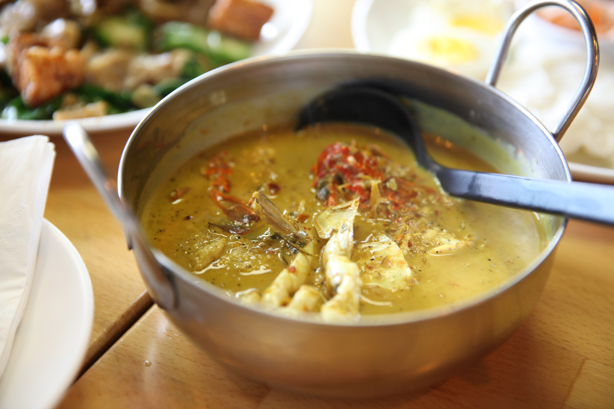

Chicken Soup

Description
Chicken soup made with cream, spinach, carrots, and yummy gnocchi. This soup is very hearty and simmered on the stove until delicious.
Ingredients
- 2 cups cooked diced chicken
- 1 cup shredded carrots
- 1 cup chopped celery
- 1 chopped onion
- 3 cloves of garlic minced
- 2 tbsp butter
- 1 cup cream
- 1 box of chicken broth
- 1 pkg of potato gnocchi
- 2 cups of spinach
Steps
- Sauted the celery, onion, and garlic in s dutch oven until translucent and golden.
- Add cream, broth, chicken, carrots, and gnocchi to the pot and cook until gnocchi is done.
- Add spinach and cover and remove from heat for 5 minutes. Server while warm.